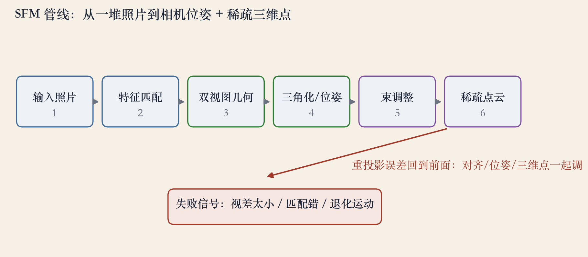
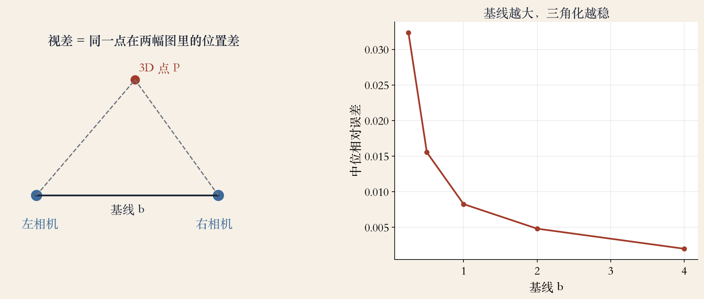

第 11 章 · SFM 开场
从照片到三维城市
从图像重建三维模型，是核心题目。
输入是照片和它们之间的对应点。
输出是相机位姿加稀疏点云。
虚拟旅游、自动驾驶、AR 都用得上。
依据：原书第 684 页
输入与输出
输入：照片 + 对应点
输出：位姿 + 稀疏点云
是一连串几何估计
正课第九十三集
01 / 14
管线 · 程序生成
一条六步管线
输入照片，做特征匹配。
双视图几何，三角化与位姿。
束调整，最后得到稀疏点云。
误差大就回到前面重修。
依据：原书第 684 页

SFM 六步：照片→匹配→几何→三角化→BA→点云｜程序生成，未用教材或论文原图
正课第九十三集
02 / 14
章节结构 · 课程边界
第 11 章地图
11.1 标定相机内参，选读。
11.2 位姿与三角化。
11.3 双视图与对极几何。
11.4 多帧与束调整；11.5 SLAM。
依据：原书第 684 页
第 11 章地图：11.1 选读，11.2–11.5 主线｜程序生成，未用教材或论文原图
正课第九十三集
03 / 14
输入 · 对应点
输入是匹配，不是像素
同一个三维点在两张图里的位置。
好匹配：描述子像、几何一致。
跨多张图串成 track。
匹配质量决定 SFM 上限。
依据：原书第 684 页
好匹配三件事
描述子像
几何一致
跨图串成 track
正课第九十三集
04 / 14
双视图 · 对极约束
双视图：对极约束
同一点在右图只能落在一条极线上。
极线来自左相机视线与右图的交线。
基线越大，视差越大，深度越稳。
基线太小，深度病态。
依据：原书第 684 页
三个词
极线：右图的候选直线
基线：两相机光心连线
视差：同一点的位置差
正课第九十三集
05 / 14
11.2 · 位姿与三角化
位姿与三角化是一对
PnP：已知三维点求相机位姿。
三角化：已知位姿求三维点。
位姿和三角化互相约束。
重投影误差是共同目标。
依据：原书第 684 页
两个方向
PnP：3D 点 → 相机位姿
三角化：位姿 → 3D 点
重投影误差：投回去差多少
正课第九十三集
06 / 14
11.4 · 多帧
多帧：用冗余压噪声
两张图只给一个相对位姿。
track 把同一个点串过多帧。
因子分解在正交投影下估结构与运动。
更通用的是束调整；冗余抗单点错误。
依据：原书第 684 页
两条路
因子分解：正交投影近似
束调整：透视相机通用
track：同一点串多帧
正课第九十三集
07 / 14
11.4.2 · 束调整
束调整：一起压误差
所有相机参数和三维点一起优化。
目标是最小化重投影误差。
每个观测只连一台相机和一个点。
雅可比矩阵非常稀疏。
依据：原书第 684 页
为什么叫束
相机中心发出一束光线
光线穿过图像点，打到结构
调整光束，让它贴住观测
正课第九十三集
08 / 14
工程流水线
增量式：一张张加图
选基线合适、匹配多的图初始化。
加新图，PnP 估位姿，三角化新点。
每步局部束调整，最后全局束调整。
初始化错会全歪，漂移会累积。
依据：原书第 684 页；工程实践
风险与兜底
初始化选错，后面全歪
漂移累积，回环接不上
几何验证 + 回环兜底
正课第九十三集
09 / 14
大规模 SFM
全局：万张照片一起算
增量式精度好但慢。
全局先估所有旋转，再估位置和结构。
适合几万张互联网照片。
分布式切块重建，再对齐合并。
依据：原书第 684 页
两条大规模路线
全局：先旋转，后位置
分布式：切块，再合并
共同目标：误差不随数量滚大
正课第九十三集
10 / 14
11.5 · SLAM
SLAM：实时版 SFM
SLAM 在移动中实时定位并建图。
前端跟踪、后端优化、回环检测。
怕纯旋转、快速运动、弱纹理。
比 SFM 约束更强，容错更低。
依据：原书第 684 页
三层结构
前端：跟踪相机
后端：优化位姿与地图
回环：认出走过的路
正课第九十三集
11 / 14
实验 · 200 个合成点
实验：深度靠视差
200 个合成三维点，两个相机。
近处视差 0.411，远处 0.134。
基线 0.5 误差 0.0163，2.0 降到 0.0046。
噪声加大，误差升到 0.0429。
依据：本集实验

视差实验：近 0.411/远 0.134；基线 0.5→2.0 误差 0.0163→0.0046｜程序生成，未用教材或论文原图
正课第九十三集
12 / 14
工程诊断
五种常见失败
视差太小：纯旋转、远距离、基线不足。
匹配错：重复纹理、反光、动态物体。
退化运动：相机共线或共面。
漂移累积；单目尺度不确定。
依据：原书第 684 页；工程实践
工程监控
重投影误差
track 长度、三角化角度
内点率；异常先回退
正课第九十三集
13 / 14
收束 · 下一集
三句话收束
SFM 从对应点同时估位姿和结构。
深度靠视差，视差靠基线。
束调整一起优化，怕错匹配和退化。
下一集：双视图几何。
依据：原书第 684 页
下一集
对极约束
本质矩阵与基础矩阵
八点法与位姿恢复
正课第九十三集
14 / 14